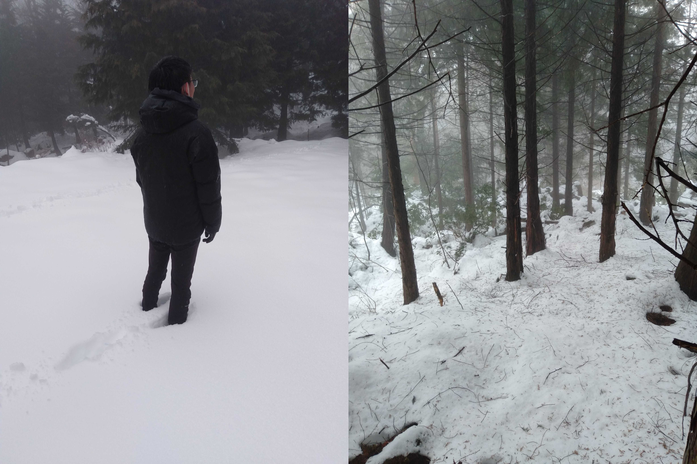

エントリーは基本的にJOY（Japan-O-entrY）からのみとなります。下記ボタンより、JOYの案内に従ってお申し込みください。
申し込み
参加費
| 一般 | 大学生・大学院生 | 高校生以下 | 第9回大会申し込み者 | 日学賛助会員 |
|---|---|---|---|---|
| 4000円 | 3600円 | 2000円 | 500円引き | 2割引き |
オプション
| 全ポ図 | 白図 | コース図 | Eカードレンタル代 |
|---|---|---|---|
| 700円 | 500円 | 500円 | 300円 |
申し込み締め切り
参加費振り込み期限
コロナ禍の状況を鑑みて、事前申し込みのみとさせていただきます。当日申し込みはございません。
遅れエントリーはございません。ご容赦ください。
大会中止時の返金について
万が一、大会中止を余儀なくされた場合、一部または全額の返金をすることが出来ない可能性がございます。ご了承ください。
延期後の日程へ参加できない競技者は地図のみの購入も可能です。
申し込みに関するご注意
- 本大会のテレインは非常に難易度が高いため、よくご検討の上、出走するクラスをお選びください。また、最上位クラス(M/W21E)は距離が通常のミドル・ディスタンス競技よりも長くタフなコースとなることが見込まれます。無理のないクラスを選択してください。
- 年齢は2023年3月31日時点のものとします。
- 原則として、Mクラスは男性用、Wクラスは女性用となっております。ただし、女性のMクラスへのエントリー・出走することを妨げません。
- 運営の都合上、競技に関する情報の変更や、クラスの変更・分割・結合を予告なく行う場合がございます。ご了承ください。
- Eカード及びプレートコンパス、熊鈴の貸し出しを行います。Eカードレンタルを希望される方は、JOYの所定欄にご記入ください。Eカードレンタル代として300円頂戴いたします。プレートコンパス・熊鈴の貸し出しのお申し込みは不要ですが、数に限りがありますのでご了承ください。プレートコンパスは保証金として300円頂戴いたします。レンタルEカードを紛失・破損した場合は8000円、コンパスを紛失・破損した場合は3000円、熊鈴を紛失・破損した場合は1000円を頂戴いたします。
- 申し込みの際に入手しました個人情報は、本大会以外には使用いたしません。ただし、主催者が大会中に撮影した画像や映像を、大会報告や今後の広報活動に活用する場合がございます。
- 前回エントリーからクラスを変更することは可能です。
- JOYの申し込みから先着順で旧八岳小学校グラウンドの駐車枠を割り当てさせていただきますので,会場近くの駐車場をご希望の場合はお早めの申し込みをお願い申し上げます。
第9回KOLC大会をお申込みいただいた方へ
第9回KOLC大会はコロナ禍により、中止とさせていただきました。当時お申込みいただいた方には、何もお返しできておらず、申し訳ありません。そこで、第9回大会にお申込みいただいた方で本大会にエントリーされる方には、ささやかながら下記の特典をご用意しております。希望される方はJOY申し込み時に、参加費区分で（第9回大会）での申し込みをお願いいたします。また、第9回大会へ申し込まれた際と今回大会で申し込むクラスが違う際は、その他連絡事項に第9回大会へ申し込まれた際のクラスをご記入ください。
特典内容
- 本大会参加費500円割引
- 第９回大会にてお申し込みされたクラスの地図配布
2022年度日本オリエンテーリング連盟賛助会員登録予定の方へ
2022年度の賛助会員への登録はまだ開始していませんが、登録が開始してから大会までに登録が完了している場合、割引を適用させていただきます。登録された場合、大会参加費が2割引となります。申し込みの際にオプション欄の賛助会員をお選びください。
丘の上(KOLC 46-49期)の方へ
本大会では、日本オリエンテーリング競技規則第22.5項「主催者は、テレインを熟知し他の競技者より明らかに有利な立場にある者を、競技に参加させてはならない。」を遵守するため、M/W21A,M/W21AS,M/WB.NにはKOLCの46-49期の方々専用に「丘の上クラス」を創設します。コース内容は通常の、M/W21A,M/W21AS,M/WB,Nと変わりません。上記のクラスへ参加を希望するKOLCの46-49期の方々は、丘の上クラスでの参加をお願いいたします。
大会延期のお知らせ（2022年3月2日 追記）
2022 年2 月20 日に開催予定でした筏場クラシック＆ミドルは、テレイン内の積雪のため延期いたします。参加を予定されていた皆様には、ご迷惑をおかけしてしまい大変申し訳ございません。
【延期理由】
2 月 10 日の大雪による積雪が深く残っており、大会当日までに積雪状況が改善される見込みがありません。礫地や岩石地が多いテレインであるため、積雪で足場が見えないことによるけがや、低体温症の危険性が高く、参加者の安全が確保できないと判断いたしました。
【テレイン内の状況】
2 月 13 日時点での競技エリアの積雪状況は下図の写真の通りです。平均して 20 cm ほど、深いところでは膝丈あたりまでの積雪が残っております。
【延期時期】
2022年5月8日（日）
【事前申し込みをされた方への対応について】
- 参加費は全額返金することを検討しております。（返金方法の詳細につきましては後日公開いたします）
- 4 月上旬頃に再エントリー要項を公開し、JOY・メールにて再エントリーを受付いたします。
- 再エントリーと同時に地図の申し込みも受け付けます。延期先の日程にご参加できない方は、そちらのページにて地図のご購入をご検討ください。また、大会グッズをお申し込みされた方については、延期先の日程でお渡しいたしますが、ご参加できない方には郵送いたします。
【お問い合わせ】
ご不明な点がございましたら、下記のメールアドレスまでお問い合わせください。
お問い合わせ：kolc11th_compgmail.com
※スパム対策の為、一部の文字がコピー出来なくなっております。ご了承ください。
ご返金について
参加費の返金処理をさせていただきました。返金方法は以下の通りです。
- 銀行振込決済者のうち、Japan-O-entrYに会員登録されている方はプリペイドへ付け直す形でご返金いたしました。
- クレジットカード決済者は、銀行口座へ直接ご返金いたしました。
延期後も参加される方はお手数ですがもう一度お申し込み下さるようお願い申し上げます。